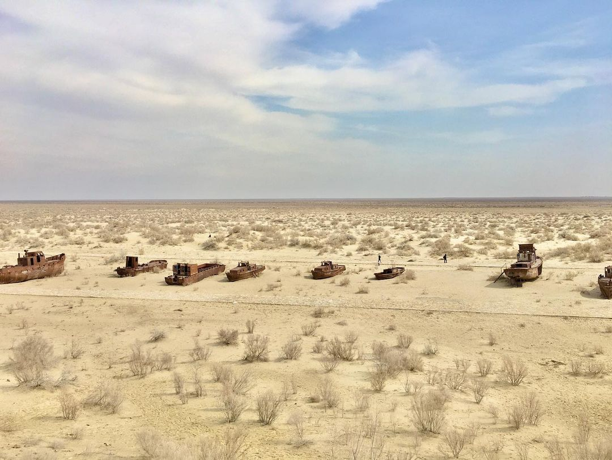

В 2008 году компанией «Петро Альянс» были проведены разведочные работы по поиску нефти и газа на бывшем дне Аральского моря; результат оказался положительным. Газ здесь высокого качества, с минимальным содержанием сероводородов.
Сейчас город расположен у высохшего моря, а когда-то добраться до города можно было только по морю или самолётом.
Кладбище кораблей
Несмотря на утеренную славу, город остаётся интереснейшим объектом для туристов и исследователей морского дна. Там вы сможете увидеть и посетить:
✔️ кладбище кораблей;
✔️ юртовый лагерь "Муйнак";
✔️ плато Устюрт;
✔️ краеведческий музей истории Муйнака;
✔️ экстремальные гонки.